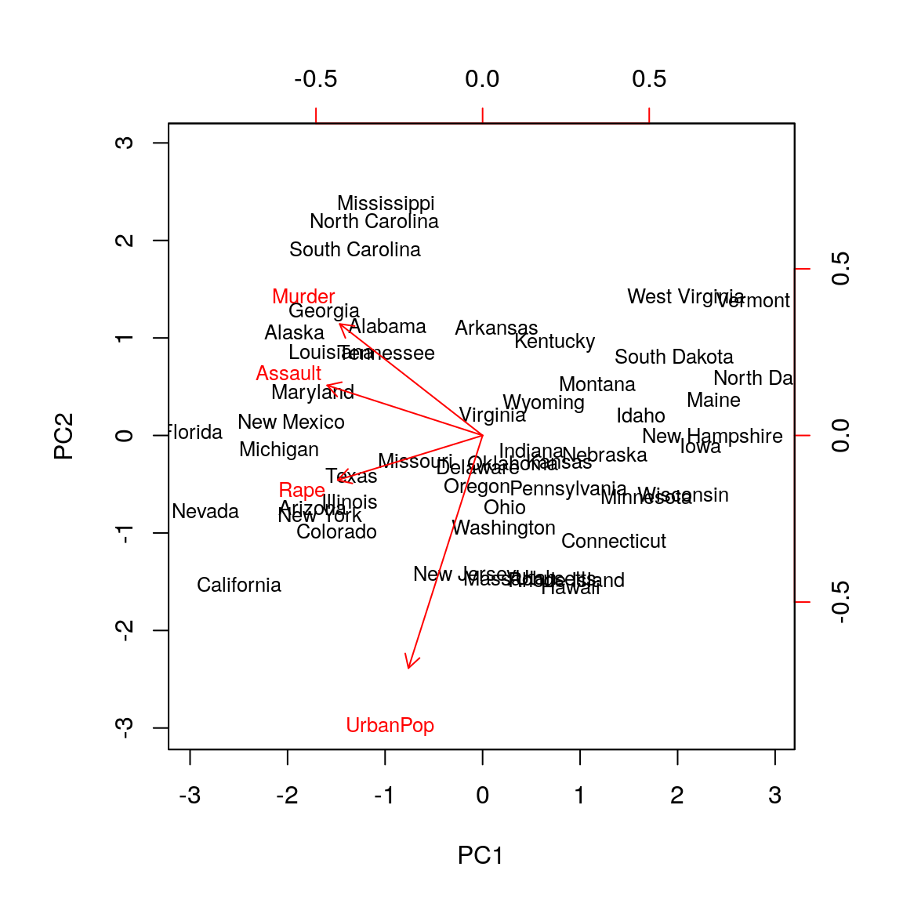
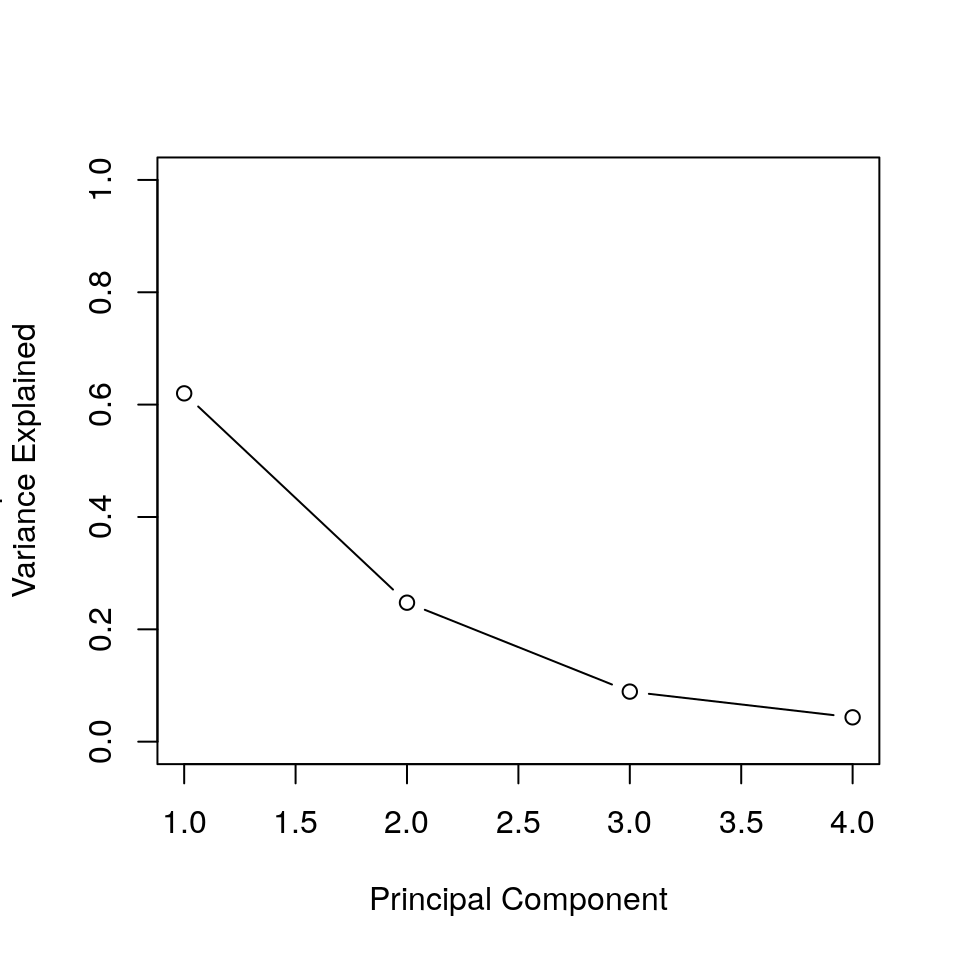
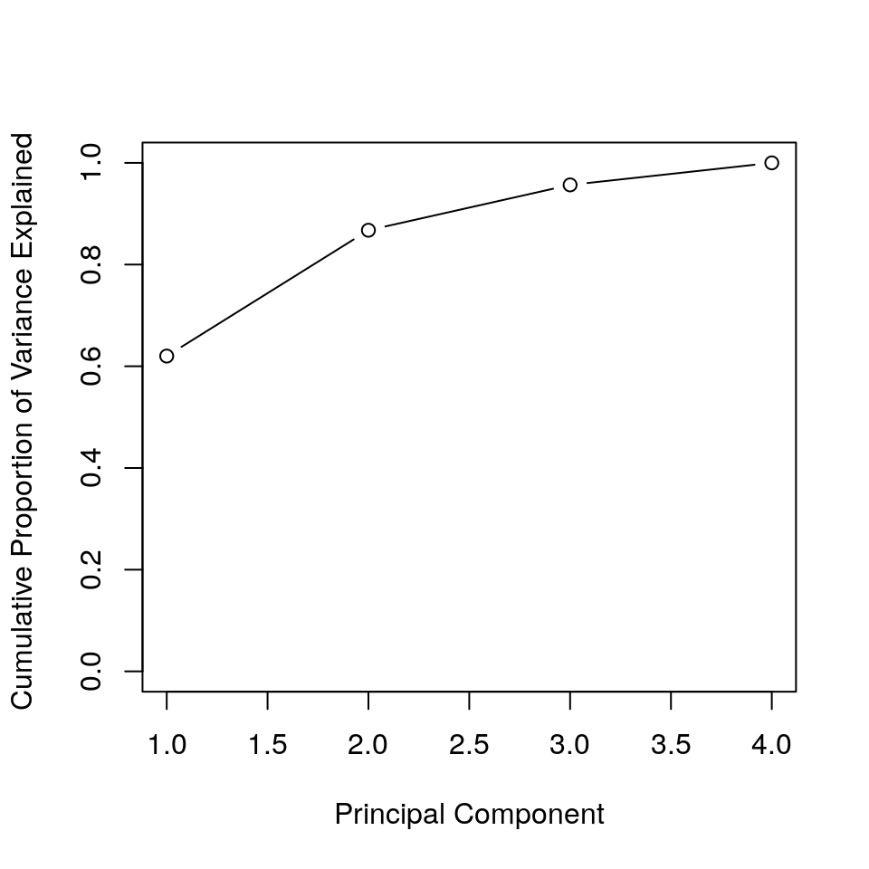

Source: James, G., Witten, D., Hastie, T., and Tibshirani, R. (2013). An introduction to statistical learning, volume 6. Springer.: 407-409.
Using the data set USArrests, included as part of the R base package, we are going to perform Principal Component Analysis.
The rows of the data set contain the fifty states, in alphabetical order.
states<- row.names(USArrests)
states## [1] "Alabama" "Alaska" "Arizona" "Arkansas"
## [5] "California" "Colorado" "Connecticut" "Delaware"
## [9] "Florida" "Georgia" "Hawaii" "Idaho"
## [13] "Illinois" "Indiana" "Iowa" "Kansas"
## [17] "Kentucky" "Louisiana" "Maine" "Maryland"
## [21] "Massachusetts" "Michigan" "Minnesota" "Mississippi"
## [25] "Missouri" "Montana" "Nebraska" "Nevada"
## [29] "New Hampshire" "New Jersey" "New Mexico" "New York"
## [33] "North Carolina" "North Dakota" "Ohio" "Oklahoma"
## [37] "Oregon" "Pennsylvania" "Rhode Island" "South Carolina"
## [41] "South Dakota" "Tennessee" "Texas" "Utah"
## [45] "Vermont" "Virginia" "Washington" "West Virginia"
## [49] "Wisconsin" "Wyoming"The columns of the data set contain the four variables.
names(USArrests)## [1] "Murder" "Assault" "UrbanPop" "Rape"We can examine the data with summary.
summary(USArrests)## Murder Assault UrbanPop Rape
## Min. : 0.800 Min. : 45.0 Min. :32.00 Min. : 7.30
## 1st Qu.: 4.075 1st Qu.:109.0 1st Qu.:54.50 1st Qu.:15.07
## Median : 7.250 Median :159.0 Median :66.00 Median :20.10
## Mean : 7.788 Mean :170.8 Mean :65.54 Mean :21.23
## 3rd Qu.:11.250 3rd Qu.:249.0 3rd Qu.:77.75 3rd Qu.:26.18
## Max. :17.400 Max. :337.0 Max. :91.00 Max. :46.00Note that there are on average three times as many rapes as murders and more than eight times as many assaults as rapes.
We can also check the variances of the variables.
apply(USArrests, 2, var)## Murder Assault UrbanPop Rape
## 18.97047 6945.16571 209.51878 87.72916They also have very different variances. The broad ranges of means and variances among the variables are not surprising: the UrbanPop variable measures the percentage of the population in each state living in an urban area, which is not a comparable number to the number of rapes in each state per 100,000 individuals. If we failed to scale the variables before performing PCA, then most of the principal components that we observed would be driven by the Assault variable, since it has by far the largest mean and variance. Thus, it is important to standardize the variables to have mean zero and standard deviation one before performing PCA.
We now perform principal components analysis using the function prcomp, one of several functions to perform PCA in R.
pr.out <- prcomp ( USArrests , scale = TRUE )By default, the prcomp function centers the variables to have mean zero. By using the option scale=TRUE , we scale the variables to have standard deviation one. The output from prcomp contains a number of useful quantities.
names(pr.out)## [1] "sdev" "rotation" "center" "scale" "x"The center and scale components correspond to the means and standard deviations of the variables that were used for scaling prior to implementing PCA.
pr.out$center## Murder Assault UrbanPop Rape
## 7.788 170.760 65.540 21.232pr.out$scale## Murder Assault UrbanPop Rape
## 4.355510 83.337661 14.474763 9.366385The rotation matrix provides the principal component loadings; each column of pr.out$rotation contains the corresponding principal component loading vector. This function names it the rotation matrix, because when we matrix-multiply the \(X\) matrix by pr.out$rotation , it gives us the coordinates of the data in the rotated coordinate system. These coordinates are the principal component scores.
pr.out$rotation## PC1 PC2 PC3 PC4
## Murder -0.5358995 0.4181809 -0.3412327 0.64922780
## Assault -0.5831836 0.1879856 -0.2681484 -0.74340748
## UrbanPop -0.2781909 -0.8728062 -0.3780158 0.13387773
## Rape -0.5434321 -0.1673186 0.8177779 0.08902432We see that there are four distinct principal components. This is to be expected because there are in general \(\min(N-1, p)\) informative principal components in a data set with \(N\) observations and \(p\) variables.
Using the prcomp function, we do not need to explicitly multiply the data by the principal component loading vectors in order to obtain the principal component score vectors. Rather the \(50 \times 4\) matrix \(x\) has as its columns the principal component score vectors. That is, the \(k\)-th column is the \(k\)-th principal component score vector.
dim(pr.out$x)## [1] 50 4We can plot the first two principal components as follows,
biplot(pr.out, scale = 0, cex=0.8) The scale=0 argument to biplot ensures that the arrows are scaled to represent the loadings; other values for scale give slightly different biplots with different interpretations.
The prcomp function also outputs the standard deviation of each principal component. For instance, on the USArrests data set, we can access these standard deviations as follows,
pr.out$sdev## [1] 1.5748783 0.9948694 0.5971291 0.4164494The variance explained by each principal component is obtained by squaring these
pr.out$sdev^2## [1] 2.4802416 0.9897652 0.3565632 0.1734301To compute the proportion of variance explained by each principal component, we simply divide the variance explained by each principal component by the total variance explained by all four principal components.
pve <- pr.out$sdev^2/sum(pr.out$sdev^2); pve## [1] 0.62006039 0.24744129 0.08914080 0.04335752We see that the first principal component explains 62.0% of the variance in the data, the next principal component explains 24.7% of the variance, and so forth. We can plot the PVE explained by each component, as well as the cumulative PVE, as follows,
plot( pve, xlab ="Principal Component", ylab ="Proportion of
Variance Explained", ylim = c (0 ,1), type = 'b')
plot( cumsum( pve ), xlab ="Principal Component", ylab="Cumulative Proportion of Variance Explained ", ylim = c (0 ,1) ,type = 'b')